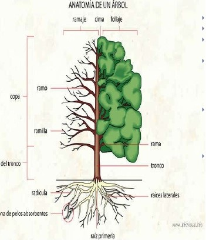
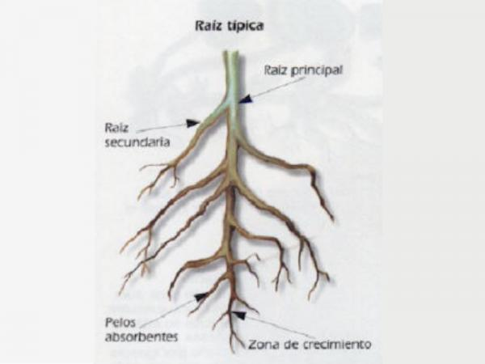
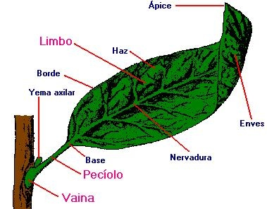
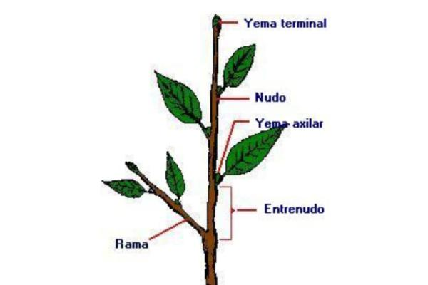
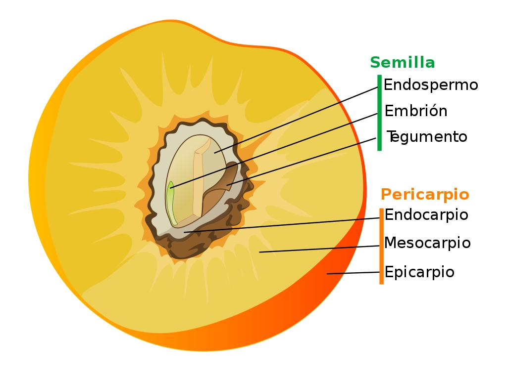

ORGANOGRAFÌA

organografìa
La organografía vegetal examina la estructura y la disposición de los órganos y los tejidos de las especies que pertenecen a la flora. El uso de microscopios permite conocer las características celulares y otros detalles de los elementos investigados.
PARTES DEL ÀRBOL

PARTES
Los árboles están formados por tres partes: la raíz, el tronco y la copa. Los dos primeros son los que diferencian, fundamentalmente, a un árbol de un arbusto. Los arbustos son más pequeños y no tienen un único tallo sino que están formados por varios.
algunos son:




Por medio de esto daremos a conocer cada parte de los àrboles que hacen parte del instituuto tecnico ambiental
- echo por: karen jimenez y michel chaquea
- 320382773
- Grado:10B
- felicidades